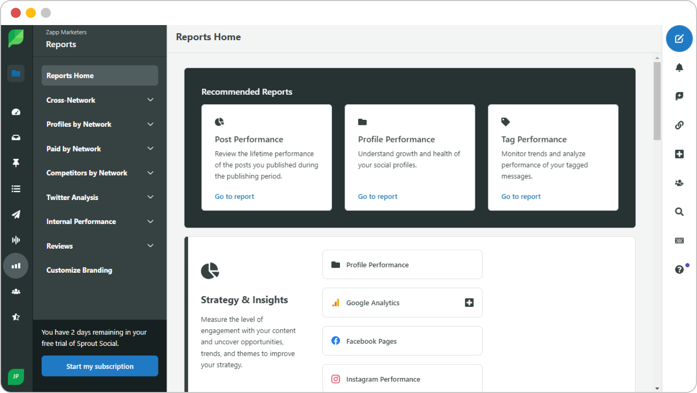
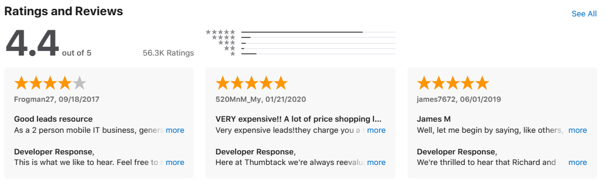

Operational Excellence in Action: How I Built a Review Management Powerhouse with Sprout Social
When Thumbtack needed a rapid, enterprise-level solution to manage and transform customer feedback at scale, I stepped into the arena. The mission: create a system to handle thousands of reviews—across app stores, Google Play, and social channels—with speed, precision, and insight.
There was no time for committees or trial runs. This was about building a high-functioning machine from the ground up, and doing it fast.
Building the Command Center
With administrator access to Sprout Social, I designed the backbone of our new review response system. Every review—no matter where it lived—was now funneled into a single, streamlined dashboard.

The Sprout Social command center - where all customer feedback converges into actionable intelligence
The key innovation? I engineered a root-cause tagging framework that instantly identified the "why" behind negative sentiment. Each root cause got its own optimized, legally-approved template—ready to deploy with a click.
One source connecting everything - how AI and automation transform scattered feedback into unified insights
The Technical Architecture: I built a comprehensive tagging taxonomy covering sentiment analysis, issue categorization, and response prioritization. This wasn't just organization—it was operational intelligence.
Turning Data into Action
As I worked through the backlog of more than 2,000 unaddressed reviews, Sprout's tag analytics began painting a crystal-clear picture. Trends emerged. Patterns revealed themselves. The noise became a signal.

Within a week, I transformed a mountain of concerns into structured, actionable intelligence—complete with drag-and-drop charts that leaders could use to guide product and policy decisions. That intelligence didn't gather dust; many of my recommendations were implemented, directly improving customer experience.
Making It Last
Speed was critical, but sustainability was the real goal. I documented every process step, from triaging sentiment to escalating critical cases, creating a repeatable Standard Operating Procedure. Then I trained the incoming team—walking them through every workflow until they could run it flawlessly.
The Scalable Framework: What started as crisis management became a template for enterprise social media operations—a system that could grow with the business and adapt to new challenges.
The Outcome
What started as a massive operational gap became a scalable, insight-driven review management engine. Sprout Social became more than a listening tool—it became a proactive customer satisfaction platform, powered by a system I designed, deployed, and handed off fully operational.
In short: I didn't just manage reviews. I built an enterprise-grade solution that turned thousands of voices into a roadmap for better products, happier customers, and a stronger brand.